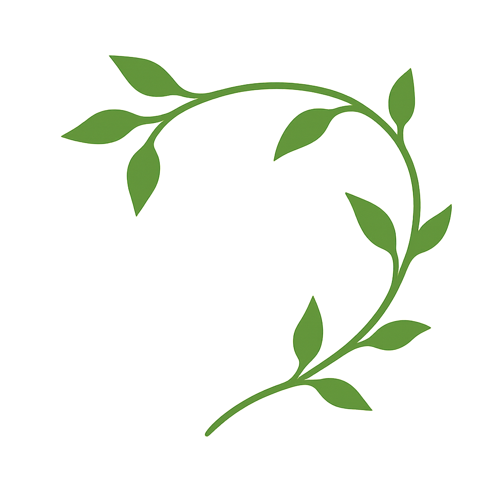
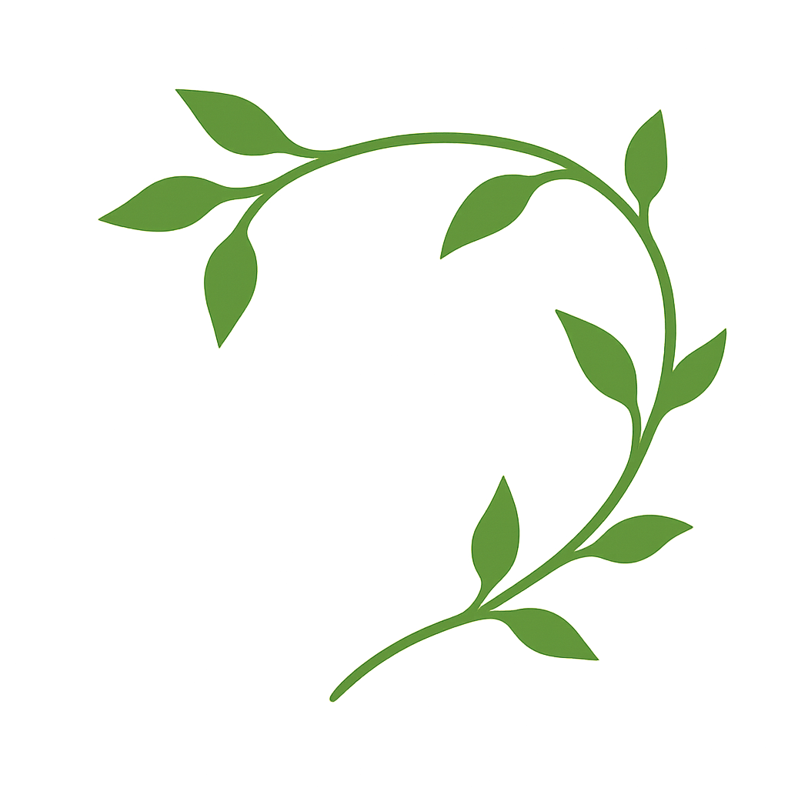

Anti-Cancer Support & Prevention Tea Blend
A ChatGPT-Crafted Wisdom Article | A blend of ancient herbal knowledge and AI insight
Introduction
This thoughtfully crafted tea blend combines time-honored herbal wisdom with modern research, supporting your body’s defense systems through powerful, natural ingredients.
Suggested Tea Formula (Per Liter)
- 1 tsp Green Tea
- 1 tsp Turmeric Root (or ½ tsp powder)
- 1 tsp Ginger Root
- 1 tsp Dandelion Root
- 1 tsp Holy Basil (Tulsi)
- 1 tsp Red Clover
- 1 tsp Milk Thistle Seed (crushed)
- Optional: 1 tsp Reishi Mushroom (dried, chopped)
- + Pinch of black pepper to enhance turmeric absorption
Preparation: Simmer roots (ginger, turmeric, dandelion, reishi, milk thistle) for 15–20 minutes. Then add green tea, red clover, tulsi and steep 10 more minutes. Strain and enjoy warm.